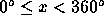

| Of(f) Course! |
FAT CHANCE Airlines has had several of their aircraft stray off course within the last few months. After the last error nearly put an aircraft over the enemy's airspace, an investigation has shown that their navigation techniques do not take the wind speed and direction into account properly.
In order to make life easier on their novice navigators, the airline has contracted with your team to produce a program that will provide the pilot with the proper heading for the aircraft, given a desired course and wind velocity.
For each flight segment, you will be given the desired course, the true air speed (the speed relative to the air) of the aircraft, the wind speed, and the direction the wind is blowing from. The pilot needs the heading to which she should steer the aircraft and the effective ground speed (the speed at which the aircraft is moving over the desired course relative to the ground).
All speeds will be given in knots, and all directions will be given in degrees (  , with 0 = north, 90 = east, 180 = south, 270 = west).
Input to your program will consist of a series of flight segments, one per line terminated by an end-of-file. Each line will consist of the wind speed, the wind direction, the desired course, and the true air speed, all given as free-format floating point numbers separated from each other by a single space.
Your program should produce for every line segment in the input file, including the last one, six lines followed by a blank line. Each of the six lines is labeled as in the example below. The first four lines reproduce the input numbers. The remaining two lines show the heading and effective ground speed calculated for each segment.
Use a format analogous to the sample below. Each number must be accurate to 1/100th.
15.0 290.0 260.0 100.0 15.0 270.0 135.0 200.0 28.0 290.0 5.0 195.0
WIND SPEED 15.00 WIND DIRECTION 290.00 DESIRED COURSE 260.00 TRUE AIRSPEED 100.00 AIRCRAFT HEADING 264.30 GROUND SPEED 86.73 WIND SPEED 15.00 WIND DIRECTION 270.00 DESIRED COURSE 135.00 TRUE AIRSPEED 200.00 AIRCRAFT HEADING 138.04 GROUND SPEED 210.33 WIND SPEED 28.00 WIND DIRECTION 290.00 DESIRED COURSE 5.00 TRUE AIRSPEED 195.00 AIRCRAFT HEADING 357.03 GROUND SPEED 185.87